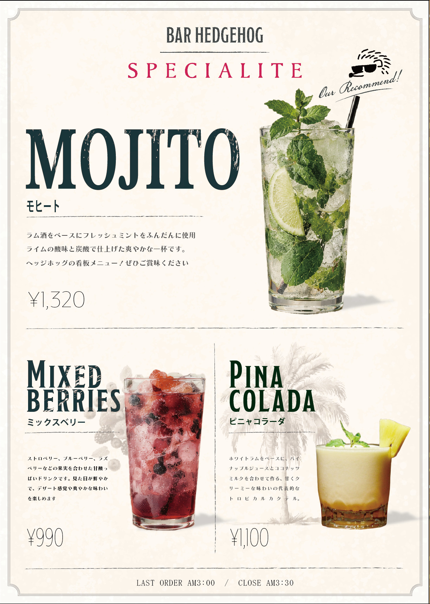
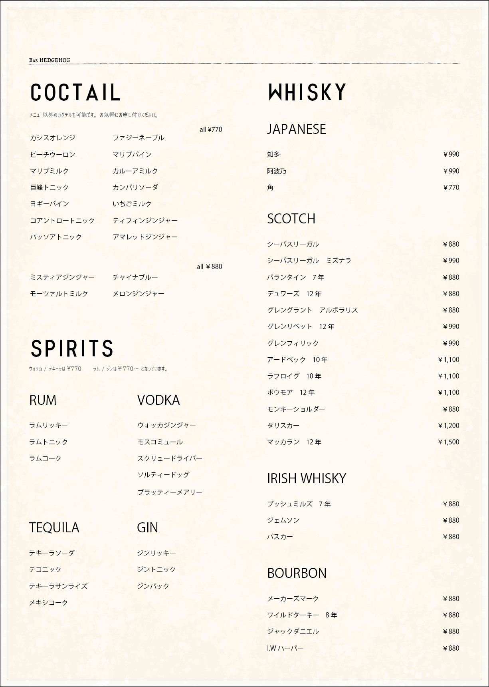
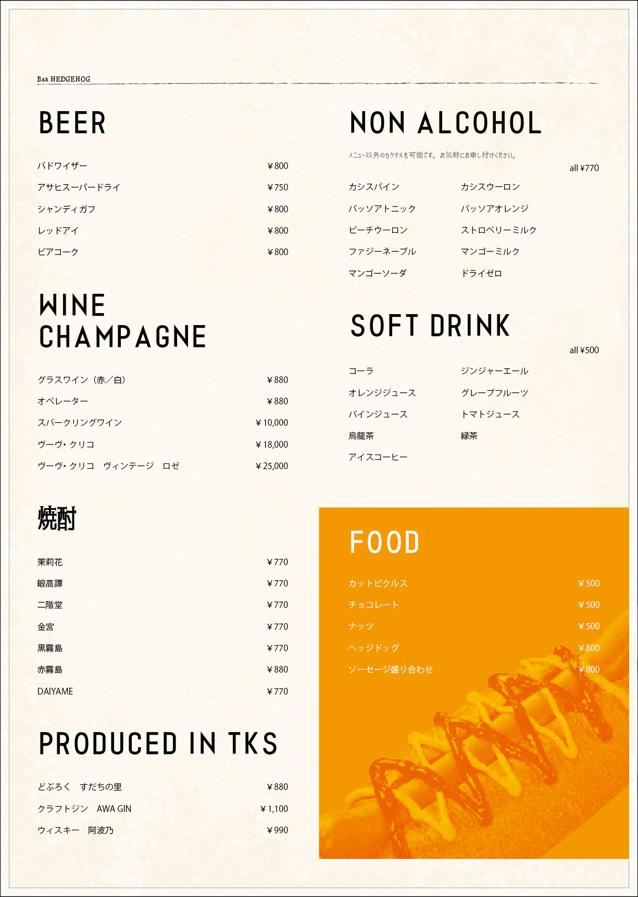
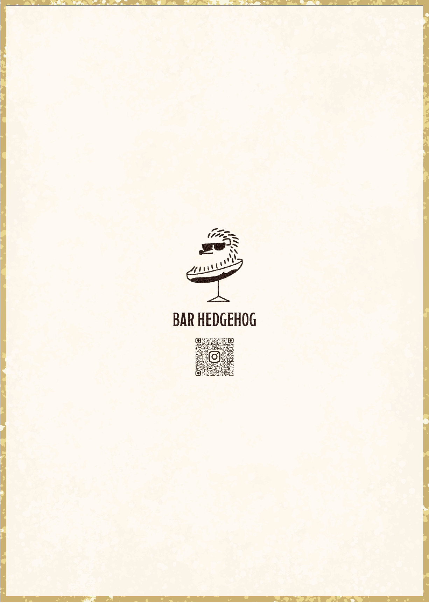

BAR HEDGEHOG メニューリニューアル
- 概要
-
徳島にあるBAR HEDGEHOG様のメニューをリニューアルしました。
オープン以来更新されていなかったメニューを見直し、現在の提供内容に合わせて情報を整理。看板商品のモヒートやスペシャルドリンクが目に留まる構成にしました。 - デザインコンセプト
- 70〜80年代のアメリカンカルチャーをテーマに、旧車や音楽、ファッション、インテリアへのこだわりが感じられる店の雰囲気を反映しました。ルート66沿いやテキサス郊外のダイナーを思わせるメニューをイメージしています。
- 構成・デザインの工夫
-
表紙には看板商品のモヒートとおすすめドリンクを掲載し、注文につながるようにしました。2ページ目以降のカクテルは定番商品に絞り、掲載外のドリンクはスタッフに尋ねてもらう案内を入れています。
フードセクションには背景色をつけ、ドリンクと直感的に見分けられるようにしました。背表紙にはマスコットキャラクターとInstagramのQRコードを載せ、店内で伝わりにくかったSNS情報への導線を加えています。 - 印刷を意識した仕上げ
- 古紙のような風合いを印刷時にも感じられるよう、背景のパスや画像を調整しました。
- 使用ソフト
- Adobe Photoshop / Adobe Illustrator
- 制作時間
- 約10時間
- 修正回数
- 3回



